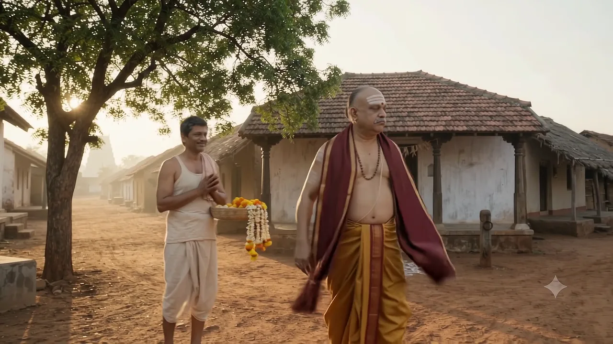
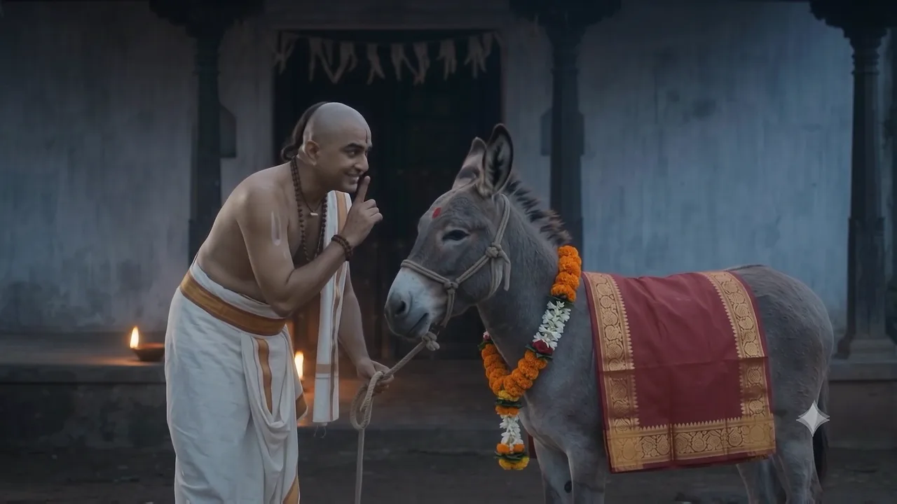
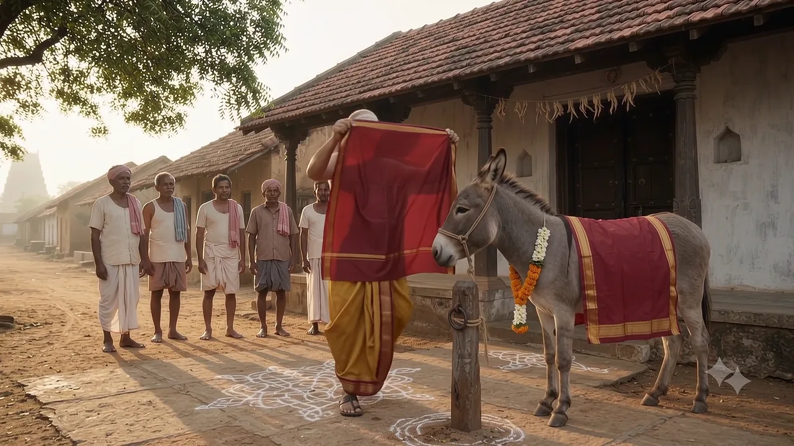
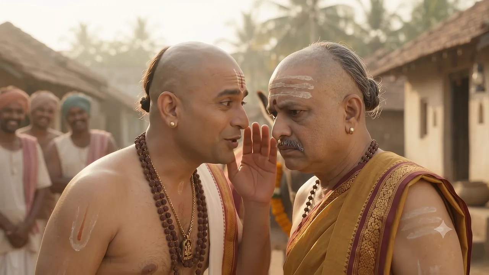
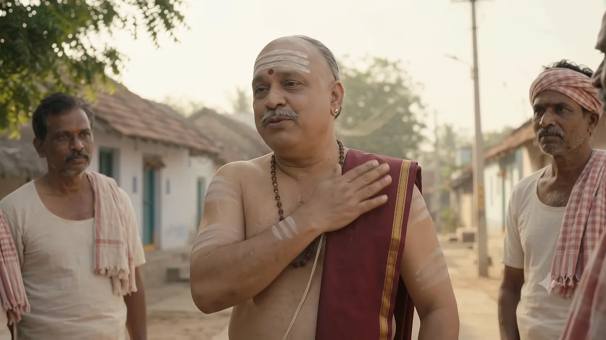

పండితుడి విచిత్రమైన అలవాటు
The Scholar's Strange Habit
విజయనగరంలో తాతాచార్యులు గొప్ప పండితుడిగా పేరుపొందారు. కానీ ఆయనకు ఒక విచిత్రమైన అలవాటు ఉండేది.
In Vijayanagara, Tatacharya was famous as a great scholar. But he had one very strange habit.
తనకంటే తక్కువ స్థాయి వాళ్ల ముఖం చూడటం కూడా తనకు తగదని భావించేవారు.
He believed that even looking at the face of someone beneath his station was unworthy of him.
ఒక పూలవాడు చేతులు జోడించి నమస్కరించగానే, ఆయన ఉత్తరీయాన్ని ముఖానికి అడ్డం పెట్టుకుని పక్కకు తిరిగిపోయారు.
When a flower seller folded his hands in greeting, he swung his uttariyam across his face and turned away.
అందుకే వీధిలో సామాన్యులు ఎదురైతే, ఉత్తరీయాన్ని ముఖానికి అడ్డం పెట్టుకుని నడిచేవారు.
So whenever ordinary people crossed his path in the street, he walked with his uttariyam held over his face.
ఇది చూసి ఊరి ప్రజలు లోలోపల నొచ్చుకునేవారు. కానీ పండితుడిని ఏమనగలరు?
The villagers were hurt inside when they saw this. But what could they say to a learned scholar?
రామకృష్ణ కవిగారి ఆలోచన
Ramakrishna's Ideaఈ సంగతి రామకృష్ణ కవిగారి చెవిన పడింది. వీధికి అవతల నిలబడి అంతా గమనించిన ఆయన ఒక కనుబొమ్మ పైకెత్తారు.
News of this reached Ramakrishna. Watching everything from across the street, he raised one eyebrow.
గడ్డం నిమురుకుంటూ నెమ్మదిగా ఒక కొంటె చిరునవ్వు నవ్వారు.
Stroking his chin, he slowly broke into a mischievous smile.
తెల్లవారకముందే
Before Dawn
ఒకరోజు తెల్లవారకముందే రామకృష్ణ కవిగారు ఒక గాడిదను తీసుకొచ్చారు. చుట్టూ చూస్తూ, మునివేళ్లపై నడుస్తూ దాన్ని తాతాచార్యుల ఇంటి దగ్గరకు నడిపించారు.
One day, before the sun was up, Ramakrishna brought a donkey. Glancing around and walking on tiptoe, he led it to Tatacharya's house.
గాడిదకు పట్టుబట్టలు కప్పి, మెడలో పూలదండ వేసి, నుదుట కుంకుమ బొట్టు పెట్టారు. గాడిద పూలదండను తినబోతే, ఆయన కోపంగా ముఖం పెట్టి దాన్ని వెనక్కి లాగారు.
He draped it in silk, hung a flower garland around its neck and dabbed kumkum on its forehead. When the donkey tried to eat the garland, he tugged it back with a comic frown.
గాడిదను పండితుల ఇంటి గుమ్మానికి కట్టి, దానికి 'ష్…' అని నోటిపై వేలు పెట్టి, నవ్వుకుంటూ మెల్లగా వెళ్లిపోయారు.
He tied the donkey at the scholar's door, put a finger to his lips — 'shh…' — and tiptoed away, grinning.
గుమ్మం ముందు గాడిద!
A Donkey at the Door!
తెల్లవారేసరికి వీధిలో జనం పోగయ్యారు. పిల్లలు కిసుక్కున నవ్వుతున్నారు, పెద్దలు వేలు చూపిస్తున్నారు.
By daybreak, a crowd had gathered in the street. Children giggled and the elders pointed.
అంతలో తలుపు తెరుచుకుంది. ఎప్పటిలాగే ముఖానికి ఉత్తరీయం అడ్డం పెట్టుకుని బయటకు వచ్చిన తాతాచార్యులు, ఏమీ కనబడక ముందుకు నడిచి — గాడిదను ముక్కుకు ముక్కు ఢీకొన్నారు!
Just then the door opened. Tatacharya stepped out with his uttariyam over his face as usual, walked forward blind — and bumped nose to nose into the donkey!
నెమ్మదిగా గుడ్డ దించి చూస్తే… ఎదురుగా అంగుళం దూరంలో గాడిద ముఖం! ఆయన కళ్ళు బయటకు వచ్చాయి. వీధి మొత్తం పగలబడి నవ్వింది.
He slowly lowered the cloth… and found the donkey's face just inches away! His eyes popped. The whole street burst out laughing.
గాడిద పూర్వజన్మ కథ
The Donkey's Past Lifeజనం మధ్యలో నుంచి చేతులు జోడించుకుని, మరీ వినయంగా రామకృష్ణ కవిగారు ముందుకు వచ్చారు.
Through the crowd came Ramakrishna, hands folded, ever so humble.
గ్రామస్థులు ఒకరినొకరు చూసుకుని, నెమ్మదిగా తాతాచార్యుల చేతిలోని ఉత్తరీయం వైపు చూశారు. ఆయన కూడా తన ఉత్తరీయం వైపు చూసుకుని గుటక వేశారు.
The villagers glanced at one another, then slowly turned to stare at the uttariyam in Tatacharya's hand. He looked down at it too — and gulped.
ఆ చివరి మాటకు వీధి మొత్తం ఘొల్లుమంది.
At that last word, the whole street roared with laughter.
గుసగుస… గాడిద ఓండ్ర!
The Whisper… and the Bray!
సరిగ్గా అప్పుడే గాడిద గట్టిగా ఓండ్ర పెట్టింది! తాతాచార్యులు భయంతో ఎగిరిపడ్డారు. జనం నవ్వులు మిన్నంటాయి.
Right on cue, the donkey let out a loud bray! Tatacharya jumped in fright, and the crowd's laughter hit the sky.
మారిన మనసు
A Change of Heart
తాతాచార్యులు తల దించుకున్నారు. తన గర్వంతో సామాన్యులను ఎంతగా నొప్పించారో ఆయనకు అప్పుడు అర్థమైంది.
Tatacharya bowed his head. Only then did he understand how deeply his pride had hurt ordinary people.
ఆయన ఉత్తరీయాన్ని ముఖం మీద నుంచి తీసి భుజానికి వేసుకుని, జనం వైపు తిరిగి చేతులు జోడించారు.
He moved the uttariyam from his face to his shoulder, turned to the people and folded his hands.
గాడిద చిన్నగా ఓండ్ర పెట్టింది. ఈసారి తాతాచార్యులతో సహా అందరూ కలిసి నవ్వుకున్నారు.
The donkey gave a small, sad bray — and this time everyone laughed together, Tatacharya included.
ఆ రోజు నుంచి తాతాచార్యులు ముఖం దాచుకోకుండా, ఎదురైన ప్రతి ఒక్కరినీ చిరునవ్వుతో పలకరించేవారు. ఊరి ప్రజలు కూడా సంతోషించారు.
From that day on, Tatacharya never hid his face again; he greeted everyone he met with a smile. And the villagers were happy too.
ఇతరులను చిన్నచూపు చూసేవాడు ఎంత గొప్పవాడైనా, చివరికి తన గర్వానికే నవ్వులపాలవుతాడు.
However great a person may be, one who looks down on others is in the end made a laughing stock by his own pride.
ఎంత చదువుకున్నా, ఎంత పేరు సంపాదించినా — ఎదుటివారిని గౌరవించలేనివాడి జ్ఞానం అసంపూర్ణమే. ఒకరి తప్పును ఎత్తిచూపడానికి కోపం అవసరం లేదు; హాస్యంతో చూపిన అద్దం మనసును మారుస్తుంది.
No matter how learned or famous you are, knowledge without respect for others is incomplete. You don't need anger to point out someone's fault — a mirror held up with humour can change a heart.
ఇతరులను చిన్నచూపు చూసేవాడు ఎంత గొప్పవాడైనా, చివరికి తన గర్వానికే నవ్వులపాలవుతాడు. గౌరవం స్థాయి వల్ల రాదు — ఇతరులను గౌరవించడం వల్ల వస్తుంది.
However great a person may be, one who looks down on others is in the end made a laughing stock by his own pride. Respect does not come from rank — it comes from respecting others.
తనకంటే తక్కువ స్థాయి వాళ్ల ముఖం చూడటం కూడా తనకు తగదని ఆయన భావించేవారు. అందుకే వీధిలో సామాన్యులు ఎదురైతే ముఖం దాచుకుని నడిచేవారు.
He believed that even looking at the faces of people of lower status was beneath him, so he hid his face whenever ordinary villagers crossed his path.
పండితుడి ఇంటి ముందు అలంకరించిన గాడిదను కట్టి, అది పూర్వజన్మలో ముఖానికి గుడ్డ అడ్డం పెట్టుకుని తిరిగిన గొప్ప పండితుడని ఒక కథ చెప్పారు. ఆ కథలో తన అలవాటునే చూసుకున్న తాతాచార్యులకు తన తప్పు అర్థమైంది.
He tied a decorated donkey at the scholar's door and told everyone it had been a great scholar in its past life — one who always hid his face from others. Seeing his own habit in that tale, Tatacharya realised his mistake.
అవును, ఈ కథ 6+ వయసు పిల్లలకు చాలా నచ్చుతుంది. హాస్యంతో పాటు వినయం, అందరినీ గౌరవించడం గురించి మంచి పాఠం నేర్పిస్తుంది.
Yes — children aged 6 and above will love it. Along with the laughs, it teaches humility and respect for everyone.
తెనాలి రామకృష్ణ కథలు — RayalSabha · @Rayalsabha చానెల్ Subscribe చేయండి
ఇంకా 20 తెనాలి కథలు వస్తున్నాయి!
Subscribe చేయండి — ఒక్క కథ కూడా miss అవ్వకండి.